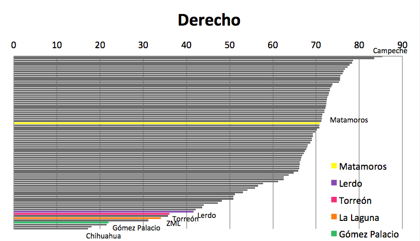
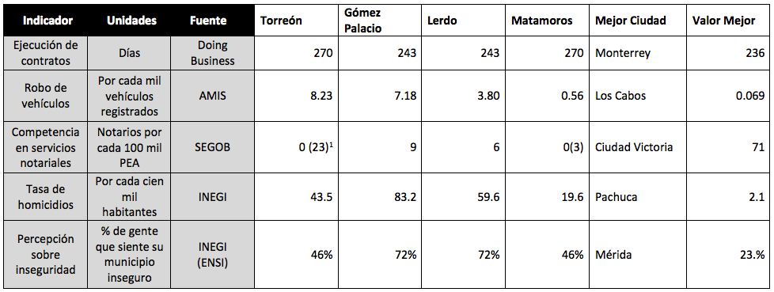

De acuerdo al ICU 2012, es el subíndice más débil de la región ocupando el lugar 73, algunos de sus subíndices ponderados con alto peso por el IMCO corresponden a rubros de seguridad pública. En este subíndice todos los municipios se encuentran en niveles similares a lo que refleja la ZML, salvo Matamoros, quien por si solo se encontraría en la mitad superior del ranking.
El primer aspecto evaluado es el tiempo de ejecución de un contrato, medido por el proyecto Doing Business del Banco Mundial, donde se consideran datos estatales. En este sentido Gómez Palacio y Lerdo se encuentran en una posición competitiva cercanos a la mejor ciudad en ese aspecto que es Monterrey. Sin embargo Torreón y Matamoros ocupan también una posición dentro de las mejores 10 ciudades en este rubro, muy por encima de la media nacional y muy lejano al peor Estado que es baja California Sur, donde Doing Buisiness calcula en 495 los días de demora de un contrato.
La información es referente al año 2010, lo cual se refleja en los indicadores vinculados a la seguridad, tal es el caso de robo de vehículos donde la ZML ocupa el sitio 76, con 6.94 robos por cada mil vehículos registrados, ya que Torreón y Gómez Palacio presentaron más de 7 robos por cada mil vehículos mientras Matamos registró menos de 1.
El subíndice de Estado de Derecho contempla también los servicios notariales como reflejo de cultura de legalidad, por lo que considera el número de notarios por cada 100 mil personas económicamente activas (PEA). A pesar de que la base de datos del ICU 2012 señala que Torreón y Matamoros no cuentan con notarios públicos, los 60 y 1 notarios respectivamente, significan en suma a la ZML 16 notarios por cada 100 mil PEA, lo cual ubicaría a la laguna en el lugar 18 de este indicador y no en el 68 que ocupó en el estudio. Torreón por si solo se encuentra entre las primeras 7 ciudades al respecto.
La ZML ocupó el lugar 69 en el año de referencia (2010) en tasa de homicidios, sin embargo Gómez Palacio presentó una tasa al nivel de ciudades como Culiacán o Mazatlán, mientras Matamoros en ese momento presento una tasa de homicidios por debajo de la media de las 77 ciudades en estudio.
Para medir la percepción de inseguridad el IMCO toma datos estatales de la Encuesta Nacional sobre Inseguridad del INEGI, aplicándole los resultados a los municipios. En el 2010 el 72 % de la población de Durango se sentía insegura en su municipio, mientras en Coahuila se registro el 46% de percepción de inseguridad.
[1] Entre paréntesis se marcan los datos reales verificables para Torreón y Matamoros.